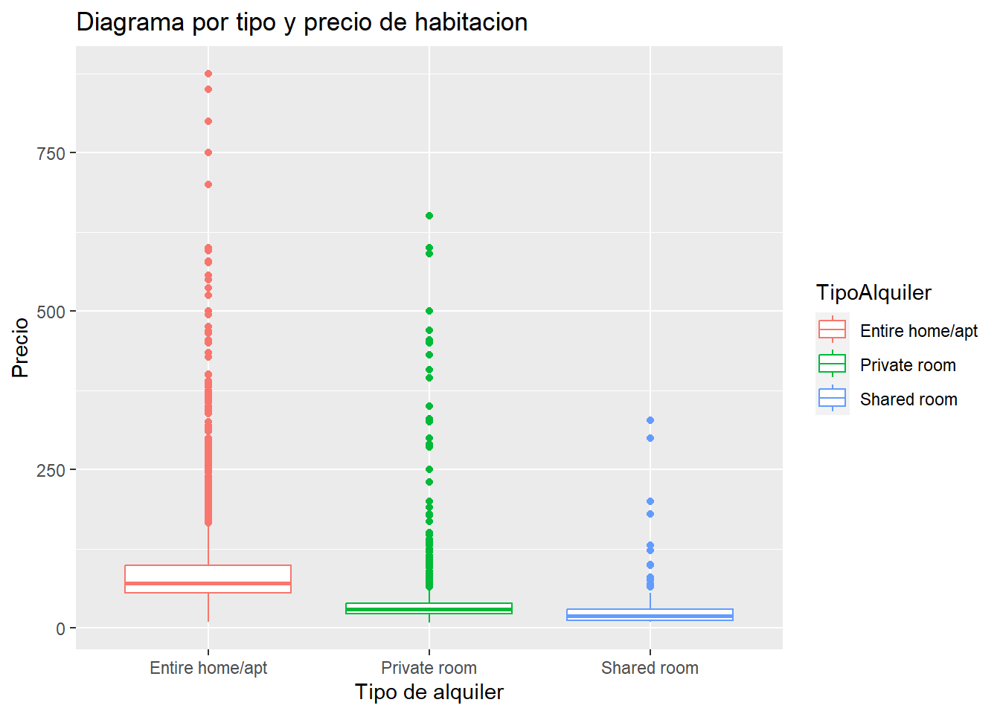
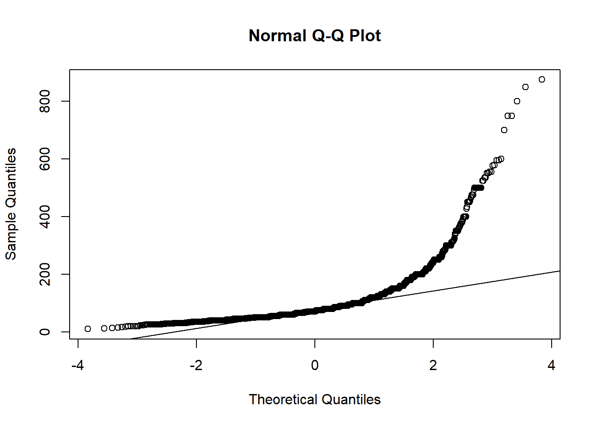
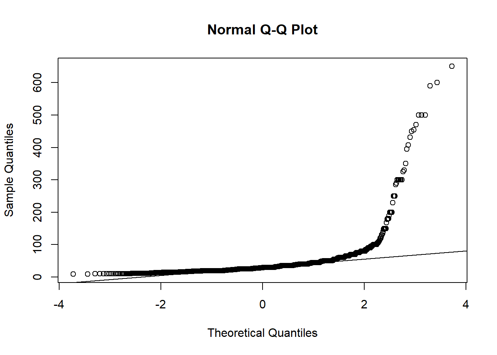
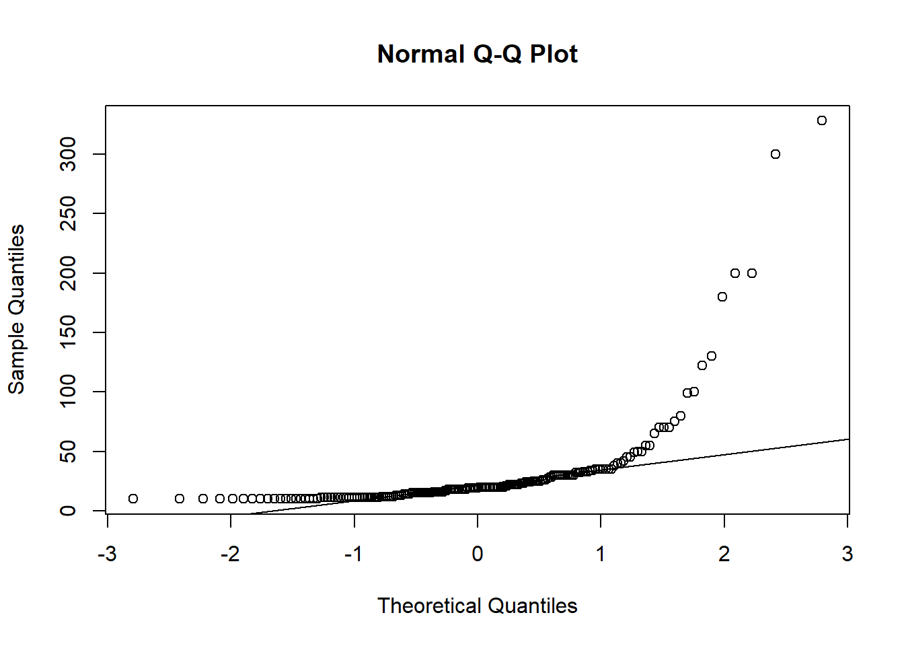
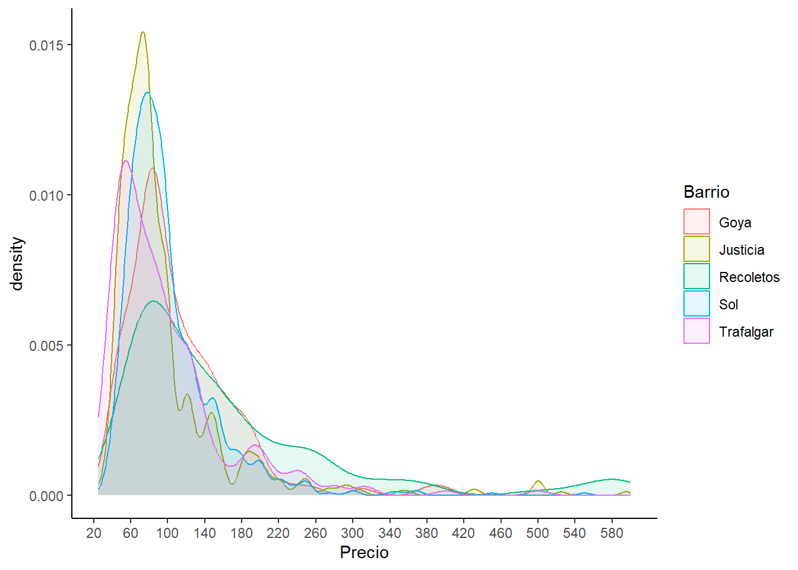
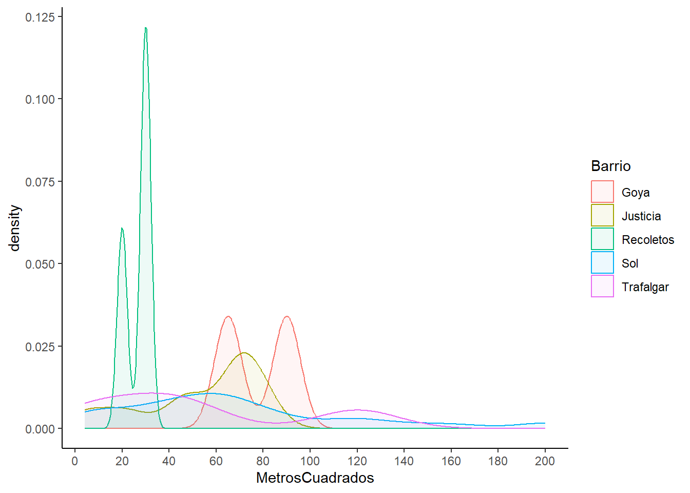
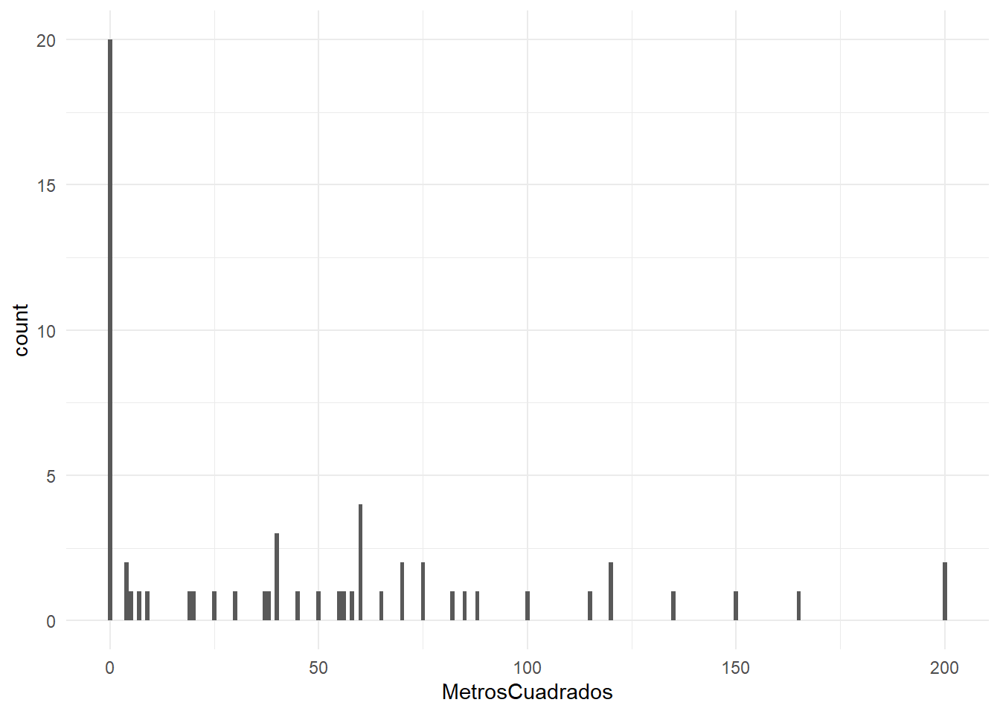
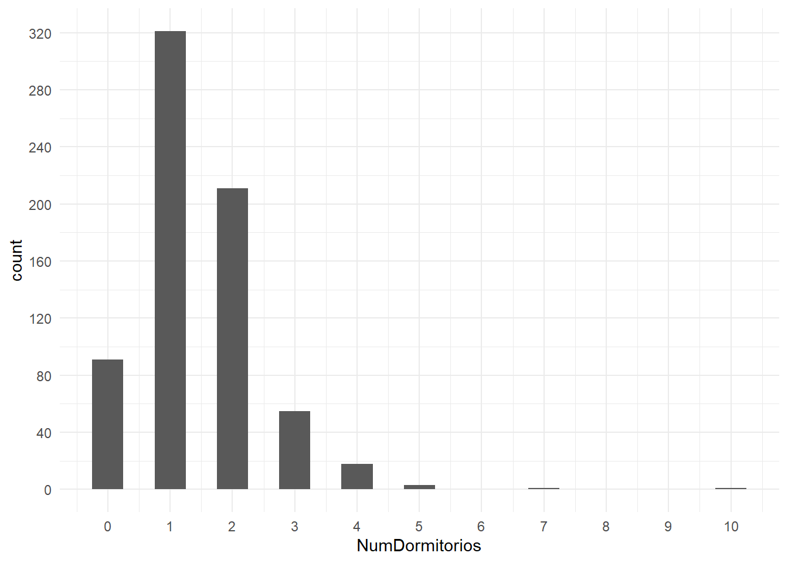
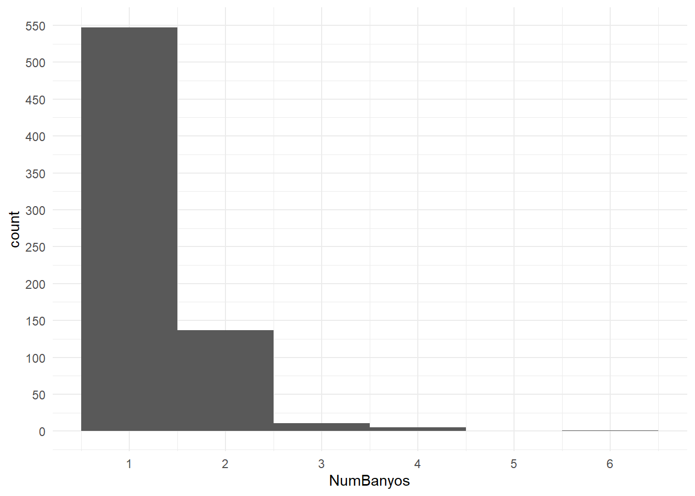
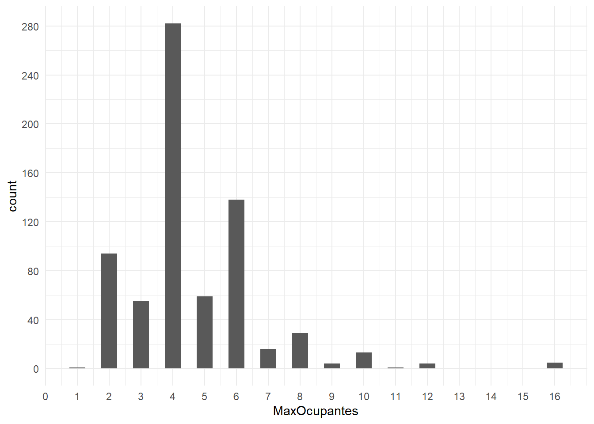

library(ggplot2)
library(dplyr)
Attaching package: 'dplyr'The following objects are masked from 'package:stats':
filter, lagThe following objects are masked from 'package:base':
intersect, setdiff, setequal, unionlibrary(ggplot2)
library(dplyr)
Attaching package: 'dplyr'The following objects are masked from 'package:stats':
filter, lagThe following objects are masked from 'package:base':
intersect, setdiff, setequal, unionCargar los datos en un dataframe llamado: airbnb
airbnb <- read.csv('C:/Users/SBedo/OneDrive/Escritorio/Estadística/data/airbnb.csv',sep = ',', stringsAsFactors = T)Mostrar las primeras 6 filas del dataframe
head(airbnb) Zipcode Neighbourhood.Cleansed Property.Type Room.Type Accommodates
1 28004 Universidad Apartment Private room 2
2 28004 Universidad Apartment Entire home/apt 6
3 28004 Universidad Apartment Entire home/apt 3
4 28004 Universidad Loft Entire home/apt 3
5 28015 Universidad Apartment Entire home/apt 5
6 28004 Universidad Apartment Entire home/apt 2
Bathrooms Bedrooms Beds Bed.Type
1 2 1 1 Real Bed
2 1 3 5 Real Bed
3 1 2 2 Real Bed
4 2 1 1 Real Bed
5 1 1 1 Real Bed
6 1 0 1 Real Bed
Amenities
1 TV,Wireless Internet,Kitchen,Pets allowed,Pets live on this property,Buzzer/wireless intercom,Heating,Suitable for events,Washer,First aid kit,Essentials,Lock on bedroom door,Iron
2 TV,Internet,Wireless Internet,Air conditioning,Kitchen,Indoor fireplace,Heating,Family/kid friendly,Washer,Dryer,Smoke detector,Carbon monoxide detector,Essentials,Shampoo
3 TV,Internet,Wireless Internet,Air conditioning,Kitchen,Doorman,Heating,Family/kid friendly,Washer,Essentials,Shampoo,Hangers,Hair dryer,Iron,Laptop friendly workspace
4 TV,Internet,Wireless Internet,Air conditioning,Kitchen,Pets allowed,Breakfast,Elevator in building,Indoor fireplace,Buzzer/wireless intercom,Heating,Washer,Essentials,Shampoo,Hangers,Hair dryer,Iron,Laptop friendly workspace,translation missing: en.hosting_amenity_49,translation missing: en.hosting_amenity_50
5 TV,Wireless Internet,Air conditioning,Kitchen,Smoking allowed,Pets allowed,Elevator in building,Heating,Family/kid friendly,Washer,Essentials,Iron
6 TV,Cable TV,Internet,Wireless Internet,Air conditioning,Wheelchair accessible,Kitchen,Doorman,Elevator in building,Buzzer/wireless intercom,Heating,Washer,Smoke detector,Carbon monoxide detector,First aid kit,Safety card,Fire extinguisher,Essentials,Shampoo,24-hour check-in,Hangers,Hair dryer,Iron,Laptop friendly workspace,Self Check-In,Doorman Entry
Square.Feet Price Review.Scores.Rating
1 NA 35 NA
2 NA 92 96
3 NA 55 91
4 NA 60 100
5 538 75 90
6 NA 55 95Renombrar las columnas de la siguiente forma:
| Nombre original | Nuevo nombre |
|---|---|
| Zipcode | CodigoPostal |
| Neighbourhood.Cleansed | Barrio |
| Property.Type | TipoPropiedad |
| Room.Type | TipoAlquiler |
| Accommodates | MaxOcupantes |
| Bathrooms | NumBanyos |
| Bedrooms | NumDormitorios |
| Beds | NumCamas |
| Bed.Type | TipoCama |
| Amenities | Comodidades |
| Square.Feet | PiesCuadrados |
| Price | Precio |
| Review.Scores.Rating | Puntuacion |
newnames<-c("CodigoPostal","Barrio","TipoPropiedad","TipoAlquiler","MaxOcupantes","NumBanyos",
"NumDormitorios","NumCamas","TipoCama","Comodidades","PiesCuadrados","Precio","Puntuacion")names(airbnb) <- newnamesAyuda: 1 pie cuadrado son 0,092903 metros cuadrdados
airbnb$MetrosCuadrados <- (airbnb$PiesCuadrados)*0.092903airbnb$CodigoPostal <- as.character(airbnb$CodigoPostal)
airbnb <- airbnb |> mutate(CodigoPostal = ifelse(CodigoPostal == "" | CodigoPostal == "-" |substr(CodigoPostal, 1,2) != "28", NA, CodigoPostal))El código postal 28002, 28004 y 28051 tienen entradas repetidas. Por ejemplo las entradas 28002 deberían ir dnetro de 28002
airbnb <- airbnb |> mutate(CodigoPostal = ifelse(CodigoPostal == "28002\n28002", "28002", ifelse(CodigoPostal == "28051\n28051", "28051", CodigoPostal)))El codigo 2804 debería ser 28004, 2805 deberia ser 28005 y 2815 juncto con 2815 debería ser 28015
airbnb <- airbnb |> mutate(CodigoPostal = ifelse(CodigoPostal == "2804", "28004", ifelse(CodigoPostal == "2805", "28005", ifelse(CodigoPostal == "280013", "28013", ifelse(CodigoPostal == "2815", "28015", CodigoPostal)))))
airbnb <- airbnb |> mutate(CodigoPostal = ifelse(CodigoPostal == "28", NA, CodigoPostal))Limpia los datos de la columna Codigo Postal
unique(airbnb$CodigoPostal) [1] "28004" "28015" "28013" "28005" "28012" "28014" "28045" NA "28007"
[10] "28028" "28009" "28001" "28006" "28010" "28002" "28034" "28050" "28008"
[19] "28011" "28049" "28038" "28053" "28047" "28025" "28019" "28024" "28016"
[28] "28036" "28046" "28039" "28020" "28003" "28029" "28054" "28041" "28026"
[37] "28058" "28018" "28030" "28017" "28027" "28043" "28033" "28055" "28021"
[46] "28032" "28037" "28022" "28042" "28094" "28035" "28040" "28031" "28044"
[55] "28105" "28023" "28051" "28850" "28048" "28056" "28060" "28052"airbnb |> count(CodigoPostal) |> arrange(desc(n)) |> head(5) CodigoPostal n
1 28012 2060
2 28004 1795
3 28005 1195
4 28013 1020
5 28014 630airbnb |> count(CodigoPostal) |> arrange(n) CodigoPostal n
1 28048 1
2 28052 1
3 28056 1
4 28058 1
5 28060 1
6 28094 1
7 28105 1
8 28850 1
9 28049 3
10 28054 12
11 28055 12
12 28040 16
13 28051 17
14 28044 19
15 28023 23
16 28031 27
17 28022 30
18 28046 32
19 28032 33
20 28018 43
21 28024 44
22 28034 45
23 28021 58
24 28050 58
25 28035 59
26 28041 63
27 28037 65
28 28036 67
29 28047 67
30 28030 73
31 28016 76
32 28038 77
33 28053 85
34 28033 89
35 28042 90
36 28026 93
37 28043 103
38 28017 107
39 28029 110
40 28027 122
41 28025 123
42 28039 160
43 28002 171
44 28003 185
45 28020 192
46 28019 200
47 28007 206
48 28009 216
49 28006 218
50 28001 231
51 28011 250
52 28028 263
53 28008 338
54 28010 384
55 <NA> 448
56 28045 495
57 28015 601
58 28014 630
59 28013 1020
60 28005 1195
61 28004 1795
62 28012 2060Como se puede apreciar, hay 8 códigos postales que tienen solo 1 entrada
barrios_28012 <- unique(airbnb[airbnb$CodigoPostal == "28012", "Barrio"])
print(barrios_28012) [1] Sol Acacias <NA> Palos de Moguer
[5] Embajadores Cortes Palacio Universidad
[9] Delicias Arapiles Atocha Goya
125 Levels: Abrantes Acacias Adelfas Aeropuerto Aguilas ... Zofíodata_28012 <- filter(airbnb, CodigoPostal == '28012')
entradas_28012 <- data_28012 |> count(Barrio)
print(entradas_28012) Barrio n
1 Acacias 13
2 Arapiles 1
3 Atocha 1
4 Cortes 216
5 Delicias 1
6 Embajadores 1449
7 Goya 1
8 Palacio 27
9 Palos de Moguer 46
10 Sol 301
11 Universidad 4unique_barrios <- unique(airbnb$Barrio)
paste("Existen en total ", length(unique_barrios)," barrios. Y son:")[1] "Existen en total 125 barrios. Y son:"unique_barrios [1] Universidad Sol
[3] Imperial Acacias
[5] Chopera Delicias
[7] Palos de Moguer Embajadores
[9] Cortes Atocha
[11] Pacífico Adelfas
[13] Estrella Ibiza
[15] Jerónimos Niño Jesús
[17] Palacio Justicia
[19] Recoletos Goya
[21] Fuente del Berro Arapiles
[23] Trafalgar Almagro
[25] Guindalera Lista
[27] Castellana El Viso
[29] Prosperidad Valverde
[31] Casa de Campo El Goloso
[33] Numancia Cármenes
[35] Puerta del Angel Lucero
[37] Aluche San Isidro
[39] Campamento Comillas
[41] Opañel Vista Alegre
[43] Ciudad Jardín Hispanoamérica
[45] Nueva España Castilla
[47] Bellas Vistas Cuatro Caminos
[49] Castillejos Vallehermoso
[51] Almenara Valdeacederas
[53] Berruguete Gaztambide
[55] Rios Rosas Peñagrande
[57] Argüelles Puerta Bonita
[59] Buenavista Abrantes
[61] Orcasur San Fermín
[63] Almendrales Pradolongo
[65] Portazgo Entrevías
[67] San Diego Palomeras Bajas
[69] Fontarrón Vinateros
[71] Ventas Pueblo Nuevo
[73] Quintana Concepción
[75] San Juan Bautista Costillares
[77] Piovera Canillas
[79] Pinar del Rey Apostol Santiago
[81] San Andrés Valdefuentes
[83] Butarque Los Angeles
[85] Casco Histórico de Vicálvaro Simancas
[87] Rejas Salvador
[89] Casco Histórico de Barajas Pilar
[91] La Paz Mirasierra
[93] Ciudad Universitaria Moscardó
[95] Palomeras Sureste Marroquina
[97] Media Legua Los Rosales
[99] Casco Histórico de Vallecas Timón
[101] Corralejos Cuatro Vientos
[103] Colina San Cristobal
[105] Alameda de Osuna Aeropuerto
[107] Palomas Zofío
[109] Aguilas Legazpi
[111] Fuentelareina Aravaca
[113] Ambroz Canillejas
[115] Valdezarza Amposta
[117] San Pascual Santa Eugenia
[119] Arcos Rosas
[121] Valdemarín El Plantío
[123] Hellín Pavones
[125] Orcasitas
125 Levels: Abrantes Acacias Adelfas Aeropuerto Aguilas ... Zofíoairbnb |> count(Barrio) |> arrange(desc(n)) |> head(5) Barrio n
1 Embajadores 1844
2 Universidad 1358
3 Palacio 1083
4 Sol 940
5 Justicia 785unique_alquiler <- unique(airbnb$TipoAlquiler)
entradas_alquiler <- airbnb |> count(TipoAlquiler)
paste("Cantidad de tipos de alquiler diferentes:", length(unique_alquiler))[1] "Cantidad de tipos de alquiler diferentes: 3"paste("Tipos de alquiler:")[1] "Tipos de alquiler:"paste(unique_alquiler)[1] "Private room" "Entire home/apt" "Shared room" paste("Entradas por tipo de alquiler:")[1] "Entradas por tipo de alquiler:"entradas_alquiler TipoAlquiler n
1 Entire home/apt 7903
2 Private room 5113
3 Shared room 191Muestra el diagrama de cajas del precio para cada uno de los diferentes Tipos de Alquiler
ggplot(airbnb,aes(x=TipoAlquiler, y = Precio, color = TipoAlquiler))+geom_boxplot()+labs(x = "Tipo de alquiler", y = "Precio", title = "Diagrama por tipo y precio de habitacion")Warning: Removed 9 rows containing non-finite values (`stat_boxplot()`).
precios_medios <- aggregate(Precio ~ TipoAlquiler, data = airbnb, mean)
precios_medios TipoAlquiler Precio
1 Entire home/apt 87.29661
2 Private room 34.25514
3 Shared room 29.85340qqnorm(airbnb[airbnb$TipoAlquiler == "Entire home/apt", ]$Precio)
qqline(airbnb[airbnb$TipoAlquiler == "Entire home/apt", ]$Precio)
qqnorm(airbnb[airbnb$TipoAlquiler == "Private room", ]$Precio)
qqline(airbnb[airbnb$TipoAlquiler == "Private room", ]$Precio)
qqnorm(airbnb[airbnb$TipoAlquiler == "Shared room", ]$Precio)
qqline(airbnb[airbnb$TipoAlquiler == "Shared room", ]$Precio)
kruskal.test(Precio ~ TipoAlquiler, data = airbnb)
Kruskal-Wallis rank sum test
data: Precio by TipoAlquiler
Kruskal-Wallis chi-squared = 7235.6, df = 2, p-value < 2.2e-16Decidí usar este test puesto que los datos no se encuentran en una distribución normal. Por lo tanto, como son 3 grupos de datos, el kruskal.test considero que es el adecuado. El resultado dió impresionantemente bajo 2.2x10^-16. Esto lo interpreto como que, hay al menos una media que es ridículamente diferente al resto, lo cual, se puede apreciar claramente en las medias calculadas anteriormente
airbnb_entire <- airbnb |> filter(TipoAlquiler == "Entire home/apt")
airbnb_entire |> head(5) CodigoPostal Barrio TipoPropiedad TipoAlquiler MaxOcupantes NumBanyos
1 28004 Universidad Apartment Entire home/apt 6 1
2 28004 Universidad Apartment Entire home/apt 3 1
3 28004 Universidad Loft Entire home/apt 3 2
4 28015 Universidad Apartment Entire home/apt 5 1
5 28004 Universidad Apartment Entire home/apt 2 1
NumDormitorios NumCamas TipoCama
1 3 5 Real Bed
2 2 2 Real Bed
3 1 1 Real Bed
4 1 1 Real Bed
5 0 1 Real Bed
Comodidades
1 TV,Internet,Wireless Internet,Air conditioning,Kitchen,Indoor fireplace,Heating,Family/kid friendly,Washer,Dryer,Smoke detector,Carbon monoxide detector,Essentials,Shampoo
2 TV,Internet,Wireless Internet,Air conditioning,Kitchen,Doorman,Heating,Family/kid friendly,Washer,Essentials,Shampoo,Hangers,Hair dryer,Iron,Laptop friendly workspace
3 TV,Internet,Wireless Internet,Air conditioning,Kitchen,Pets allowed,Breakfast,Elevator in building,Indoor fireplace,Buzzer/wireless intercom,Heating,Washer,Essentials,Shampoo,Hangers,Hair dryer,Iron,Laptop friendly workspace,translation missing: en.hosting_amenity_49,translation missing: en.hosting_amenity_50
4 TV,Wireless Internet,Air conditioning,Kitchen,Smoking allowed,Pets allowed,Elevator in building,Heating,Family/kid friendly,Washer,Essentials,Iron
5 TV,Cable TV,Internet,Wireless Internet,Air conditioning,Wheelchair accessible,Kitchen,Doorman,Elevator in building,Buzzer/wireless intercom,Heating,Washer,Smoke detector,Carbon monoxide detector,First aid kit,Safety card,Fire extinguisher,Essentials,Shampoo,24-hour check-in,Hangers,Hair dryer,Iron,Laptop friendly workspace,Self Check-In,Doorman Entry
PiesCuadrados Precio Puntuacion MetrosCuadrados
1 NA 92 96 NA
2 NA 55 91 NA
3 NA 60 100 NA
4 538 75 90 49.98181
5 NA 55 95 NAairbnb_entire |> count(Barrio) |> arrange(desc(n)) |> head(5) Barrio n
1 Embajadores 1228
2 Universidad 984
3 Palacio 769
4 Sol 701
5 Cortes 574Ayuda: Usa la función aggregate aggregate(.~colname,df,mean,na.rm=TRUE)
# Método función aggregate
airbnb_top_mean <- aggregate(Precio ~ Barrio, data = airbnb_entire, mean, na.rm = TRUE) |> arrange(desc(Precio))
airbnb_top_mean |> head(5) Barrio Precio
1 Palomas 309.7500
2 Fuentelareina 180.0000
3 Recoletos 161.9254
4 El Plantío 150.0000
5 Castellana 141.3889# Método función group_by sugerido en clase
airbnb_top_mean <- airbnb_entire |> group_by(Barrio) |> summarise(PrecioMedio = mean(Precio,na.rm = TRUE)) |> arrange(desc(PrecioMedio))
airbnb_top_mean |> head(5)# A tibble: 5 × 2
Barrio PrecioMedio
<fct> <dbl>
1 Palomas 310.
2 Fuentelareina 180
3 Recoletos 162.
4 El Plantío 150
5 Castellana 141.Me dio bastante dificultad este punto haciéndolo por los dos métodos. Puesto que, en principio, me deberían dar los mismos resultados, sin embargo tuve que recurrir a la docu de cada función que estaba usando porque me daban resultados ligeramente diferente.
Indagando, me di cuenta que la función “agreggate” parece remover los NA’s de manera natural, por otra parte, la función “mean” (usada en el group_by), hay que expresarlo que los remueva.
Mostrar una dataframe con el nombre del barrio, el precio y el número de entradas.
Ayuda: Podeis crear un nuevo dataframe con las columnas “Barrio” y “Freq” que contenga el número de entradas en cada barrio y hacer un merge con el dataframe del punto anterior.
airbnb_temp1 <- airbnb_entire |> count(Barrio)
names(airbnb_temp1) <- c('Barrio',"Freq")
airbnb_unido <- merge(airbnb_top_mean,airbnb_temp1, by = "Barrio")
airbnb_unido |> arrange(desc(PrecioMedio)) |> head(5) Barrio PrecioMedio Freq
1 Palomas 309.7500 4
2 Fuentelareina 180.0000 2
3 Recoletos 161.9254 135
4 El Plantío 150.0000 1
5 Castellana 141.3889 73airbnb_top_upper100 <- airbnb_unido |> filter(Freq > 100)
airbnb_filter_top <- airbnb_top_upper100 |> arrange(desc(PrecioMedio)) |> head(5)
airbnb_filter_top Barrio PrecioMedio Freq
1 Recoletos 161.92537 135
2 Goya 111.33803 142
3 Sol 100.75036 701
4 Trafalgar 98.57848 223
5 Justicia 98.25468 534airbnb_top_complete <- airbnb_entire |> filter(Barrio == 'Goya' | Barrio == 'Justicia' | Barrio == 'Recoletos' | Barrio == 'Sol' | Barrio == 'Trafalgar')
ggplot(airbnb_top_complete, aes(x=Precio, color = Barrio, fill = Barrio))+geom_density(adjust = 0.8, alpha = 0.1)+scale_x_continuous(breaks = seq(20,610,40))+theme_classic()Warning: Removed 1 rows containing non-finite values (`stat_density()`).
airbnb_temp2 <- aggregate(MetrosCuadrados ~ Barrio, data = airbnb_top_complete, mean, na.rm = TRUE)
names(airbnb_temp2) <- c('Barrio', 'MediaMetrosCuadrados')
airbnb_filter_top <- merge(airbnb_filter_top,airbnb_temp2, by = 'Barrio')
airbnb_filter_top Barrio PrecioMedio Freq MediaMetrosCuadrados
1 Goya 111.33803 142 51.68504
2 Justicia 98.25468 534 28.52669
3 Recoletos 161.92537 135 26.66316
4 Sol 100.75036 701 45.61692
5 Trafalgar 98.57848 223 29.30426airbnb_top_complete_square <- airbnb_top_complete |> filter(MetrosCuadrados > 0)
ggplot(airbnb_top_complete_square, aes(x=MetrosCuadrados, color = Barrio, fill = Barrio)) + geom_density(alpha = 0.07, adjust = 0.8) + scale_x_continuous(breaks = seq(0,200,20))+theme_classic()
summary(aov(MetrosCuadrados ~ Barrio, data = airbnb_top_complete_square)) Df Sum Sq Mean Sq F value Pr(>F)
Barrio 4 6857 1714 0.817 0.52
Residuals 53 111250 2099 Debido al resultado del p-valor, no es posible asegurar estadísticamente que las medias sean diferentes
Para únicamente los pisos de alquiler en el barrio de Sol:
barrio_sol<-subset(airbnb_entire,Barrio=="Sol")
barrio_sol<-subset(airbnb_entire,Barrio=="Sol")
barrio_sol |> head(5) CodigoPostal Barrio TipoPropiedad TipoAlquiler MaxOcupantes NumBanyos
10 28013 Sol Apartment Entire home/apt 4 1
11 28013 Sol Condominium Entire home/apt 6 1
12 28013 Sol Apartment Entire home/apt 4 1
13 28012 Sol Apartment Entire home/apt 6 1
14 28013 Sol Apartment Entire home/apt 4 1
NumDormitorios NumCamas TipoCama
10 1 1 Real Bed
11 2 3 Real Bed
12 1 2 Real Bed
13 2 2 Real Bed
14 1 2 Real Bed
Comodidades
10 TV,Wireless Internet,Air conditioning,Kitchen,Doorman,Elevator in building,Buzzer/wireless intercom,Heating,Family/kid friendly,Suitable for events,Washer,Essentials,Hangers,Hair dryer,Iron
11 TV,Wireless Internet,Air conditioning,Kitchen,Doorman,Elevator in building,Buzzer/wireless intercom,Heating,Family/kid friendly,Washer,Dryer,Essentials,Shampoo,Hangers,Hair dryer,Iron
12 TV,Internet,Wireless Internet,Air conditioning,Kitchen,Doorman,Elevator in building,Buzzer/wireless intercom,Heating,Family/kid friendly,Washer,Smoke detector,Carbon monoxide detector,First aid kit,Safety card,Fire extinguisher,Essentials,Shampoo,24-hour check-in,Hangers,Hair dryer,Iron,Laptop friendly workspace
13 TV,Internet,Wireless Internet,Air conditioning,Kitchen,Smoking allowed,Elevator in building,Buzzer/wireless intercom,Heating,Family/kid friendly,Washer,Dryer,Essentials,Shampoo,Hangers,Hair dryer,Iron,Laptop friendly workspace
14 TV,Internet,Wireless Internet,Air conditioning,Kitchen,Heating,Washer,Essentials,Hangers,Hair dryer,translation missing: en.hosting_amenity_50
PiesCuadrados Precio Puntuacion MetrosCuadrados
10 646 75 91 60.01534
11 NA 130 100 NA
12 NA 100 97 NA
13 NA 160 95 NA
14 NA 49 95 NACalcular un modelo lineal que combine alguna de estas variables: * NumBanyos * NumDormitorios * MaxOcupantes * MetrosCuadrados
airbnb_correlacion <- cor(barrio_sol[, c("NumBanyos", "NumDormitorios", "MaxOcupantes", "MetrosCuadrados")], use = "complete.obs")
airbnb_correlacion NumBanyos NumDormitorios MaxOcupantes MetrosCuadrados
NumBanyos 1.0000000 0.6873719 0.7017290 0.4820549
NumDormitorios 0.6873719 1.0000000 0.7853809 0.5684521
MaxOcupantes 0.7017290 0.7853809 1.0000000 0.4286233
MetrosCuadrados 0.4820549 0.5684521 0.4286233 1.0000000Para sacar la correlación en este caso, se ha tenido que usar el parámetro “complete.obs” debido a la gran cantidad de NA’s que existen en la columna “MetrosCuadrados”
Mediante un histograma o curvas de densidad podemos descartar números que notienen sentido en el dataframe barrio_sol, para tener una matriz de correlación que tenga mayor sentido.
ggplot(barrio_sol, aes(x=MetrosCuadrados))+geom_histogram(binwidth = 1)+theme_minimal()Warning: Removed 641 rows containing non-finite values (`stat_bin()`).
ggplot(barrio_sol, aes(x = NumDormitorios))+geom_histogram(binwidth = 0.5)+theme_minimal()+scale_x_continuous(breaks = seq(0,10,1))+scale_y_continuous(breaks = seq(0,350,40))
ggplot(barrio_sol, aes(x = NumBanyos))+geom_histogram(binwidth = 1)+theme_minimal()+scale_x_continuous(breaks = seq(0,6,1))+scale_y_continuous(breaks = seq(0,550,50))
ggplot(barrio_sol, aes(x = MaxOcupantes))+geom_histogram(binwidth = 0.5)+theme_minimal()+scale_x_continuous(breaks = seq(0,16,1))+scale_y_continuous(breaks = seq(0,280,40))
Al analizar las gráficas, se concluye que hay muchos datos incoherentes en la columna “MetrosCuadrados”, puesto que no puede ser posible que un lugar tenga 0m, además, como se dijo en el punto pasado, hay gran cantidad de datos nulos en esta columna, lo que también influye. Ahora, hay dos caminos posibles, eliminar la variable MetrosCuadrados o trabajar con los pocos datos que se puedan. Desarrollaré a continuación las dos posibilidades para evaluar ambos resultados
# Con metros cuadrados
barrio_sol_filtered <- barrio_sol |> filter(MetrosCuadrados > 0)
paste("Hay que tener en cuenta que se está trabajando en este caso con", nrow(barrio_sol_filtered), "filas de datos")[1] "Hay que tener en cuenta que se está trabajando en este caso con 40 filas de datos"cor(barrio_sol_filtered[,c("NumBanyos", "NumDormitorios", "MaxOcupantes", "MetrosCuadrados")]) NumBanyos NumDormitorios MaxOcupantes MetrosCuadrados
NumBanyos 1.0000000 0.7356920 0.8528252 0.5712130
NumDormitorios 0.7356920 1.0000000 0.7841590 0.7717458
MaxOcupantes 0.8528252 0.7841590 1.0000000 0.7108265
MetrosCuadrados 0.5712130 0.7717458 0.7108265 1.0000000# Sin metros cuadrados
barrio_sol_delete_m <- select(barrio_sol, -MetrosCuadrados)
paste("Hay que tener en cuenta que se está trabajando en este caso con ",nrow(barrio_sol_delete_m)," filas de datos")[1] "Hay que tener en cuenta que se está trabajando en este caso con 701 filas de datos"cor(barrio_sol_delete_m[, c("NumBanyos", "NumDormitorios", "MaxOcupantes")]) NumBanyos NumDormitorios MaxOcupantes
NumBanyos 1.0000000 0.6761906 0.6578162
NumDormitorios 0.6761906 1.0000000 0.7594598
MaxOcupantes 0.6578162 0.7594598 1.0000000¿Que variable es más fiable para conocer el precio de un inmueble, el número de habitaciones o los metros cuadrados?
model <- lm(data = barrio_sol_filtered, formula = Precio ~ NumDormitorios + MetrosCuadrados)
summary(model)
Call:
lm(formula = Precio ~ NumDormitorios + MetrosCuadrados, data = barrio_sol_filtered)
Residuals:
Min 1Q Median 3Q Max
-86.134 -16.183 -0.823 15.801 68.085
Coefficients:
Estimate Std. Error t value Pr(>|t|)
(Intercept) 36.8284 7.9805 4.615 4.61e-05 ***
NumDormitorios 32.5581 5.8817 5.535 2.67e-06 ***
MetrosCuadrados 0.2153 0.1449 1.486 0.146
---
Signif. codes: 0 '***' 0.001 '**' 0.01 '*' 0.05 '.' 0.1 ' ' 1
Residual standard error: 28.88 on 37 degrees of freedom
Multiple R-squared: 0.7527, Adjusted R-squared: 0.7393
F-statistic: 56.31 on 2 and 37 DF, p-value: 5.952e-12La diferencia entre las dos avariables es abismal. Evidentemente la variable del número de dormitorios es más fiable a la hora de conocer un precio del inmueble.
model2 <- lm(data = barrio_sol_delete_m, formula = Precio ~ NumDormitorios + NumBanyos + MaxOcupantes)
summary(model2)
Call:
lm(formula = Precio ~ NumDormitorios + NumBanyos + MaxOcupantes,
data = barrio_sol_delete_m)
Residuals:
Min 1Q Median 3Q Max
-239.561 -18.065 -4.053 12.914 256.955
Coefficients:
Estimate Std. Error t value Pr(>|t|)
(Intercept) 14.439 3.806 3.794 0.000161 ***
NumDormitorios 12.160 2.171 5.602 3.05e-08 ***
NumBanyos 28.827 3.484 8.275 6.53e-16 ***
MaxOcupantes 6.910 1.040 6.643 6.18e-11 ***
---
Signif. codes: 0 '***' 0.001 '**' 0.01 '*' 0.05 '.' 0.1 ' ' 1
Residual standard error: 35.12 on 697 degrees of freedom
Multiple R-squared: 0.535, Adjusted R-squared: 0.533
F-statistic: 267.3 on 3 and 697 DF, p-value: < 2.2e-16No está de más añadir. Podemos ver que al precio (sin tener en cuenta los metros cuadrados), todas las demás variables junto con el número de dormitorios, lo afectan de manera significativa.
model2 <- lm(data = barrio_sol_filtered , formula = Precio ~ MetrosCuadrados)
confint(model2) 2.5 % 97.5 %
(Intercept) 25.5471054 67.594737
MetrosCuadrados 0.5853331 1.083027Basándonos en los resultados obtenidos, podemos saber que aumentará por cada metro cuadrado entre 0.59 y 1.09 euros
model3 <- lm(data = barrio_sol_filtered, formula = Precio ~ NumDormitorios)
confint(model3) 2.5 % 97.5 %
(Intercept) 25.28828 56.24528
NumDormitorios 31.61069 46.99334Basándonos en los resultados obtenidos, podemos saber que aumentará por cada habitación entre 31.6 y 47 euros
total_apartamentos <- nrow(barrio_sol)
total_apt_3_dormi <- nrow(subset(barrio_sol, NumDormitorios == 3))
probabilidad_apt <- total_apt_3_dormi / total_apartamentos
resultado <- binom.test(total_apt_3_dormi,total_apartamentos,p=0.95)
intervalo_confianza <- resultado$conf.int
paste("La probabilidad de encontrar un apartamento con 3 dormitorios en el barrio de Sol es del ",round(probabilidad_apt * 100, 2),"%. El intervalo de confianza del 95% para este caso se sitúa entre el ", round(intervalo_confianza[1] * 100, 2),"% y el ", round(intervalo_confianza[2] * 100, 2),"%", sep = "")[1] "La probabilidad de encontrar un apartamento con 3 dormitorios en el barrio de Sol es del 7.85%. El intervalo de confianza del 95% para este caso se sitúa entre el 5.97% y el 10.09%"